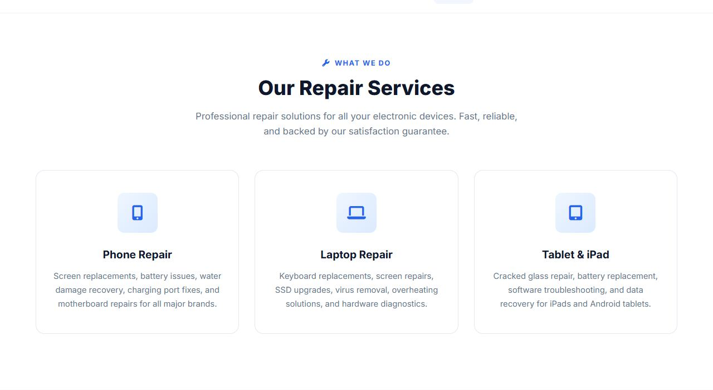
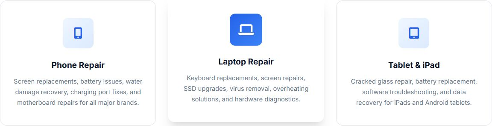
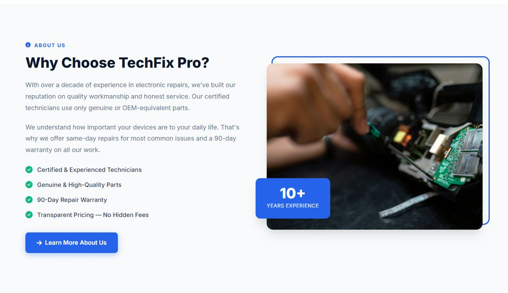

Lesson 11 · Building the Pages
Home Page, Part 2: Services & About
Next come two sections: three service cards with playful hover effects, and a two-column “Why Choose TechFix Pro?” section with a framed photo and a floating badge.
- About 60 minutes
- Edits:
index.html
By the end of this lesson you will be able to
- Build a row of equal cards with
grid-template-columns: repeat(3, 1fr). - Change a child element when its parent is hovered.
- Draw decorative shapes with
::beforeand animate them withtransform: scaleX(). - Build a two-column text-and-image layout.
- Position a badge so it overlaps the edge of an image.
Where new sections go
From now on, every new section of a page goes directly above <!-- Footer -->. That way the sections stay in the right order, and the footer stays at the bottom.
Section 1 — Our Repair Services

Add the services HTML
In index.html, directly above <!-- Footer -->, add:
<!-- Footer --><!-- Services Section -->
<section class="services" id="services">
<div class="container">
<div class="section-header fade-in">
<div class="overline"><i class="fas fa-wrench"></i> What We Do</div>
<h2>Our Repair Services</h2>
<p>Professional repair solutions for all your electronic devices. Fast, reliable, and backed by our satisfaction guarantee.</p>
</div>
<div class="services-grid">
<div class="service-card fade-in stagger-1">
<div class="service-icon">
<i class="fas fa-mobile-alt"></i>
</div>
<h3>Phone Repair</h3>
<p>Screen replacements, battery issues, water damage recovery, charging port fixes, and motherboard repairs for all major brands.</p>
</div>
<div class="service-card fade-in stagger-2">
<div class="service-icon">
<i class="fas fa-laptop"></i>
</div>
<h3>Laptop Repair</h3>
<p>Keyboard replacements, screen repairs, SSD upgrades, virus removal, overheating solutions, and hardware diagnostics.</p>
</div>
<div class="service-card fade-in stagger-3">
<div class="service-icon">
<i class="fas fa-tablet-alt"></i>
</div>
<h3>Tablet & iPad</h3>
<p>Cracked glass repair, battery replacement, software troubleshooting, and data recovery for iPads and Android tablets.</p>
</div>
</div>
</div>
</section>Notice the familiar pieces: .container (Lesson 5) and the .section-header with its .overline (Lesson 6). These already have their styles, so only the cards need new CSS. That's shared styling paying off.
Style the services section and cards
Add to the <style> block, below the hero CSS:
<style> block, below the hero CSS/* ============================================
Services Section
============================================ */
.services {
padding: 100px 0;
background: var(--white);
}
.services-grid {
display: grid;
grid-template-columns: repeat(3, 1fr);
gap: 1.75rem;
}
.service-card {
background: var(--white);
border: 1px solid var(--border);
border-radius: var(--radius-lg);
padding: 2.5rem 1.75rem;
text-align: center;
transition: var(--transition);
position: relative;
overflow: hidden;
}
.service-card::before {
content: '';
position: absolute;
top: 0; left: 0; right: 0;
height: 4px;
background: linear-gradient(90deg, var(--primary), var(--primary-light));
transform: scaleX(0);
transition: transform 0.4s ease;
}
.service-card:hover::before { transform: scaleX(1); }
.service-card:hover {
transform: translateY(-8px);
box-shadow: var(--shadow-lg);
border-color: transparent;
}
.service-icon {
width: 72px;
height: 72px;
background: linear-gradient(135deg, #eff6ff 0%, #dbeafe 100%);
border-radius: var(--radius);
display: flex;
align-items: center;
justify-content: center;
margin: 0 auto 1.5rem;
font-size: 1.7rem;
color: var(--primary);
transition: var(--transition);
}
.service-card:hover .service-icon {
background: linear-gradient(135deg, var(--primary) 0%, var(--primary-light) 100%);
color: var(--white);
transform: scale(1.05);
}
.service-card h3 {
font-size: 1.2rem;
font-weight: 700;
margin-bottom: 0.75rem;
}
.service-card p {
color: var(--gray);
font-size: 0.92rem;
line-height: 1.7;
}grid-template-columns: repeat(3, 1fr)is shorthand for1fr 1fr 1fr: three equal columns.padding: 100px 0on the section adds generous space above and below. Every TechFix Pro section does this.- The blue bar:
.service-card::beforeis a 4px-high strip across the top of the card. It starts atscaleX(0)(squashed to zero width, so invisible). On hover,scaleX(1)stretches it to full width, and the transition animates it growing from the centre outward. - Parent hover → child changes:
.service-card:hover .service-iconmeans “the icon inside a card that is being hovered”. Hovering anywhere on the card turns its icon box solid blue with a white icon. overflow: hiddenon the card clips the bar to the card's rounded corners.

Section 2 — Why Choose TechFix Pro?

Add the about HTML
Directly above <!-- Footer --> (so, below the services section), add:
<!-- Footer --><!-- About Section -->
<section class="about" id="about">
<div class="container">
<div class="about-grid">
<div class="about-content fade-in">
<div class="overline"><i class="fas fa-info-circle"></i> About Us</div>
<h2>Why Choose TechFix Pro?</h2>
<p>With over a decade of experience in electronic repairs, we've built our reputation on quality workmanship and honest service. Our certified technicians use only genuine or OEM-equivalent parts.</p>
<p>We understand how important your devices are to your daily life. That's why we offer same-day repairs for most common issues and a 90-day warranty on all our work.</p>
<ul class="about-features">
<li><i class="fas fa-check-circle"></i> Certified & Experienced Technicians</li>
<li><i class="fas fa-check-circle"></i> Genuine & High-Quality Parts</li>
<li><i class="fas fa-check-circle"></i> 90-Day Repair Warranty</li>
<li><i class="fas fa-check-circle"></i> Transparent Pricing — No Hidden Fees</li>
</ul>
<a href="about.html" class="btn btn-primary">
<i class="fas fa-arrow-right"></i>
Learn More About Us
</a>
</div>
<div class="about-image fade-in stagger-2">
<img src="https://images.unsplash.com/photo-1581092918056-0c4c3acd3789?w=600&h=450&fit=crop" alt="Technician repairing electronics" loading="lazy">
<div class="experience-badge">
<span class="years">10+</span>
<span class="text">Years Experience</span>
</div>
</div>
</div>
</div>
</section>.about-gridhas two children:.about-content(left) and.about-image(right).loading="lazy"on the<img>tells the browser not to download the photo until the visitor scrolls near it, which makes the page load faster.alt="Technician repairing electronics"describes the photo for screen readers and appears if the image fails to load.
Style the text column
Add to the <style> block:
<style> block, below the services CSS/* ============================================
About Section
============================================ */
.about {
padding: 100px 0;
background: var(--light);
}
.about-grid {
display: grid;
grid-template-columns: 1fr 1fr;
gap: 4rem;
align-items: center;
}
.about-content h2 {
font-size: 2.25rem;
font-weight: 800;
margin-bottom: 1.25rem;
line-height: 1.2;
}
.about-content > p {
color: var(--gray);
font-size: 1rem;
margin-bottom: 1.25rem;
line-height: 1.8;
}
.about-features {
list-style: none;
margin: 1.5rem 0 2rem;
}
.about-features li {
display: flex;
align-items: center;
gap: 0.75rem;
margin-bottom: 0.85rem;
color: var(--dark-gray);
font-weight: 500;
font-size: 0.95rem;
}
.about-features li i {
color: #10b981;
font-size: 1.1rem;
flex-shrink: 0;
}grid-template-columns: 1fr 1frgives two equal columns;align-items: centercentres them vertically against each other..about-content > puses the child combinator>, so it only affects paragraphs directly inside.about-content.- Each feature
liis a flex row (icon + text).flex-shrink: 0stops the icon from being squashed if the text is long. #10b981is a green colour used only for these tick icons, so it isn't one of the shared variables.
Style the image, frame and badge
Add to the <style> block:
<style> block, below the previous CSS.about-image {
position: relative;
z-index: 1;
}
.about-image img {
width: 100%;
border-radius: var(--radius-lg);
box-shadow: var(--shadow-lg);
object-fit: cover;
height: 420px;
}
.about-image::before {
content: '';
position: absolute;
top: -18px; right: -18px;
width: 100%; height: 100%;
border: 3px solid var(--primary);
border-radius: var(--radius-lg);
z-index: -1;
}
.experience-badge {
position: absolute;
bottom: 28px; left: -28px;
background: var(--primary);
color: var(--white);
padding: 1.25rem 1.75rem;
border-radius: var(--radius);
text-align: center;
box-shadow: var(--shadow-lg);
}
.experience-badge .years {
font-size: 2.25rem;
font-weight: 800;
display: block;
line-height: 1;
}
.experience-badge .text {
font-size: 0.8rem;
opacity: 0.9;
text-transform: uppercase;
letter-spacing: 0.5px;
}object-fit: coverwith a fixedheight: 420pxcrops the photo neatly instead of stretching it.- The blue frame:
.about-image::beforeis an empty box the same size as the image, with a 3px blue border, shifted 18px up and 18px right (top: -18px; right: -18px).z-index: -1puts it behind the photo, so only its edges peek out. - The badge:
position: absolute; bottom: 28px; left: -28px;. A negative left value pushes it 28px outside the image's left edge so it overlaps.
Why .about-image has z-index: 1
An element with z-index: -1 can slip behind the section's background and disappear completely. Giving the parent .about-image a position and its own z-index creates a new “stacking context”: a sealed group of layers. The frame can then only go as far back as the back of its own group, which keeps it visible. (The original site got this for free from its JavaScript animation; we add it on purpose.)
Checkpoint
Common mistakes
- Cards stacked in one column: check
class="services-grid"on the wrapper anddisplay: gridin its rule. - The blue frame is missing: check
content: '';in.about-image::before. Without it, pseudo-elements never appear. Also checkz-index: 1on.about-image. - The badge is in the wrong place:
.about-imageneedsposition: relative, which is the frame the badge is positioned inside.
Practice
Add a fourth service card for “Console Repair” using the icon fas fa-gamepad. Where does it go with only three columns? (Delete it afterwards to match the original, or keep it and change repeat(3, 1fr) to repeat(4, 1fr) to see four in a row.)